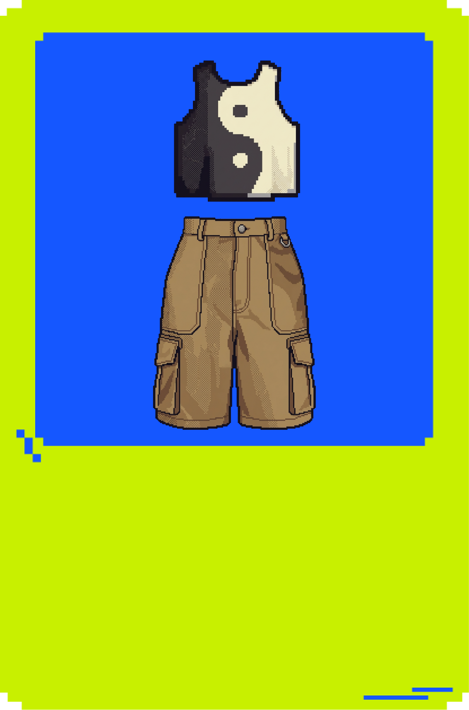
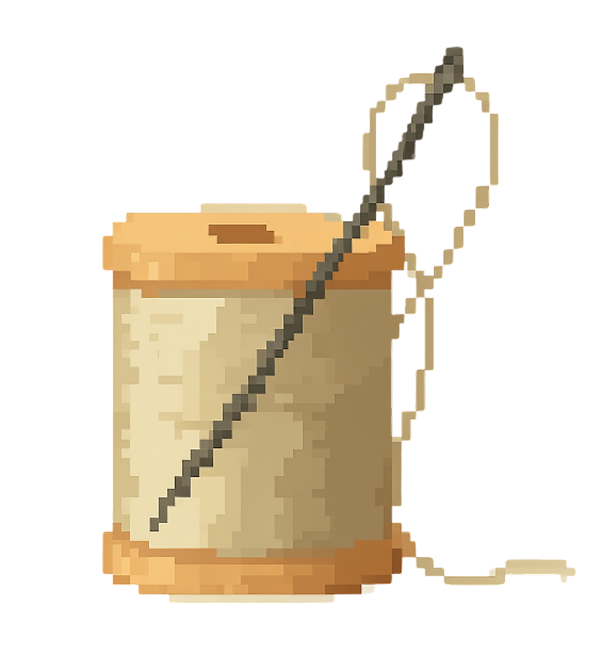
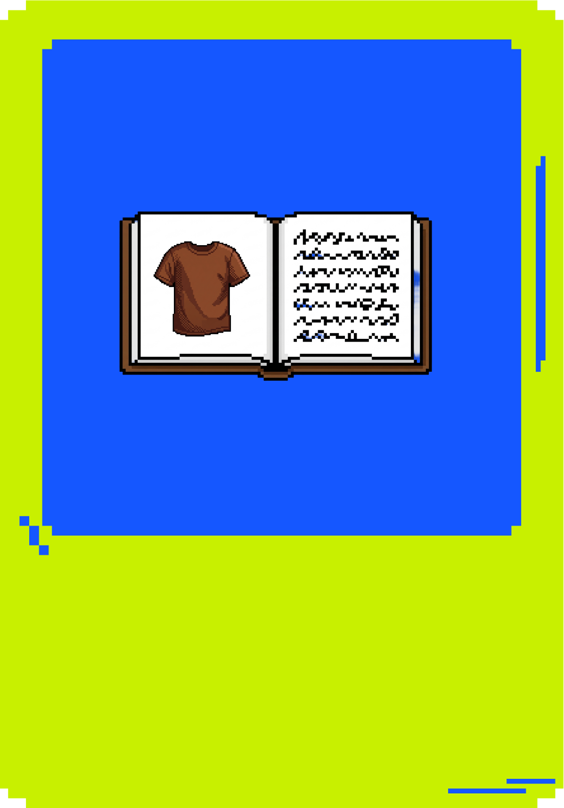
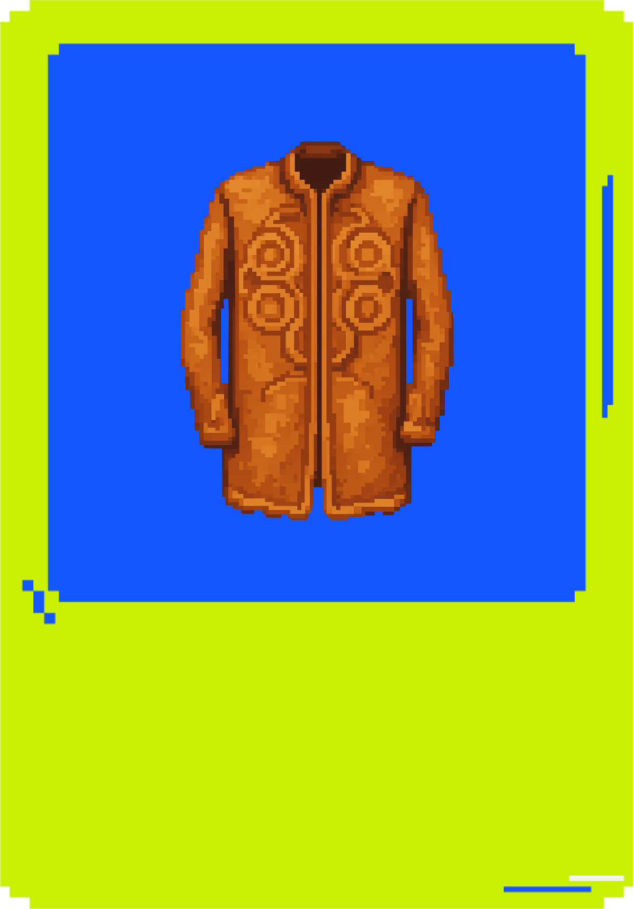

Garimpar
Navegue pelas coleções, explore as peças e descubra histórias escondidas em cada retalho.

Por trás da construção do projeto

O RE.CORTE é uma experiência digital que convida você a garimpar histórias, desbloquear memórias e criar um look com a sua cara. Mais do que um site sobre moda, é um espaço para explorar como se constrói pertencimento em uma cidade marcada por deslocamentos, disputas e transformações.
AQUI, A ROUPA É MAIS DO QUE VESTIR: É
MEMÓRIA, IDENTIDADE E RESISTÊNCIA.
CADA PEÇA CARREGA UMA PARTE DA HISTÓRIA DA
PERIFERIA DE SÃO PAULO — E UM CONVITE PARA
VOCÊ SE RECONHECER NELA.
A periferia de São Paulo carrega uma memória fragmentada. Suas raízes — nordestinas, indígenas e suburbanas — foram historicamente apagadas, diluídas ou tratadas como secundárias na narrativa oficial da cidade. Ao mesmo tempo, a moda hegemônica segue elitizada, massificada e desconectada de quem cria e veste nas periferias.
O RE.CORTE nasce para responder a isso. Ele reconstrói, peça por peça, memórias que foram apagadas e coloca a periferia no lugar de autoria, não de tema. Aqui, quem cria, veste e transforma é protagonista.
Upcycling é transformar o que seria descartado em algo novo e cheio de valor. Retalhos, roupas de segunda mão e tecidos esquecidos ganham novas vidas — sem apagar de onde vieram.
No RE.CORTE, isso não é apenas uma técnica de confecção: é um conceito. Nas periferias, usar retalho para fazer roupa já é uma prática econômica e cultural — como na cadeia que liga o comércio de retalhos do Brás ao mercado da sulanca, em Pernambuco. Roupas são passadas, modificadas e reusadas em redes de solidariedade e criação.
Por isso, o upcycling aqui não é uma ética imposta de fora: é a continuação de uma prática existente. Assim como você combina peças para criar seu look, as periferias recombinam memórias, símbolos e histórias para construir identidade. Nada é apenas descartado. Tudo pode ser recombinado, reinterpretado e transformado.
A experiência acontece em três etapas — e cada uma é um convite:

Navegue pelas coleções, explore as peças e descubra histórias escondidas em cada retalho.

Entenda as histórias e símbolos para desbloquear conteúdos e refletir sobre narrativas que, mesmo transformadas pelo tempo, guardam sua essência.

Arraste as peças para combiná-las e monte um look com a sua cara. Este é o seu momento de criar com liberdade.
Essa jornada cria um “garimpo identitário”: você não consome
conteúdo passivamente — escava, escolhe e recombina,
exatamente como o upcycling faz com os tecidos.
Cada coleção abre uma porta para uma narrativa diferente, mas
todas se encontram na mesma ideia: a roupa como forma de
guardar memória, afirmar presença e criar novas
possibilidades a partir do que já existe.
O passado apagado da periferia e a necessidade de reconectar-se com ele. Cada peça carrega uma história que não é só visual: é herança, é território, é o que veio antes.
O autoconhecimento construído a partir dessa memória. Você não recebe uma identidade pronta: a constrói ao garimpar, desbloquear e combinar referências, reconhecendo-se nelas.
A periferia no lugar de autoria, não de tema. Você não apenas consome: cria, experimenta e ocupa o espaço de quem constrói a própria narrativa.
Esse projeto foi criado por estudantes do curso de Tecnólogo em Produção Multimídia, 2º Semestre, período Noturno, do Centro Universitário Senac Santo Amaro.